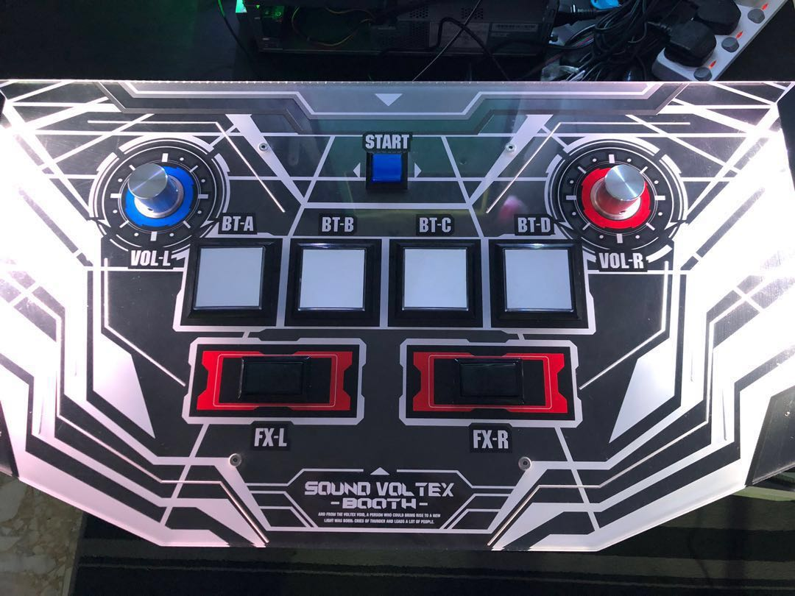
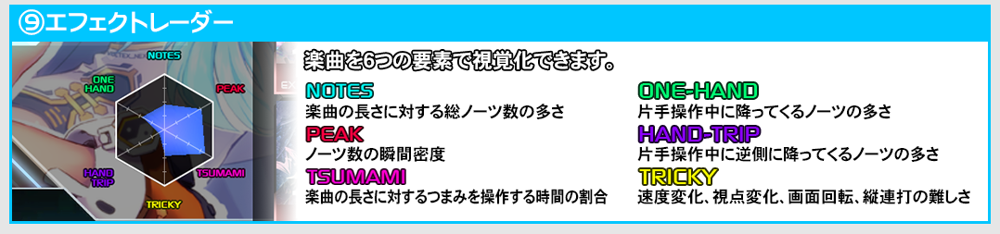

Sound Voltex is a rhythm game that takes you beyond the bounds of buttons. Utilizing the function of knob turning, it takes rhythm gaming to a new dimension by providing an innovative and more interactive way to play rhythm games.
The controller consists of 4 main buttons (BT buttons), two thumb buttons (FT buttons), two knobs (one left and one right), and a main/start button. Players push the corresponding BT and FT buttons and turn the knobs to the rythm of the music as notes and slider fall down the note highway or more commonly called lane.

There are many gimmicks to look out for. Each song is prone to have tricks up its sleeves to try and challenge the player as the difficulty increases. There are 6 categories that songs span in play style:
Notes: note count
Peak: peak intensity (peak is a parameter of the game similar to star power in guitar hero)
Tsunami: knob turning
One-Handed: knob turning with one hand while hitting notes with other
Hand-Trip: requiring a hand to travel across the controller to the opposite side to use knob/buttons (ie. while your left hand is turning the left knob, your right hand needs to travel across the controller to hit BT-A)
Tricky: lane speed changes and other special gimmicks (ie. the video above shows the animation of lane splitting at timestamp 1:25)
These song play styles are uniquely valued in a pie chart as shown below
